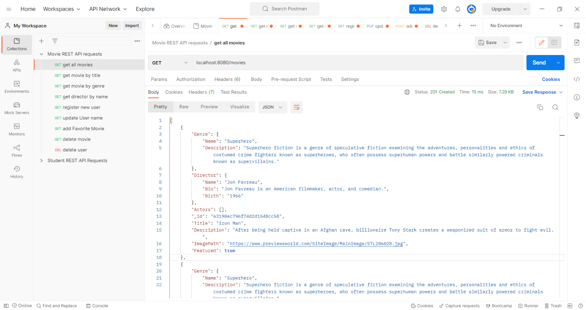
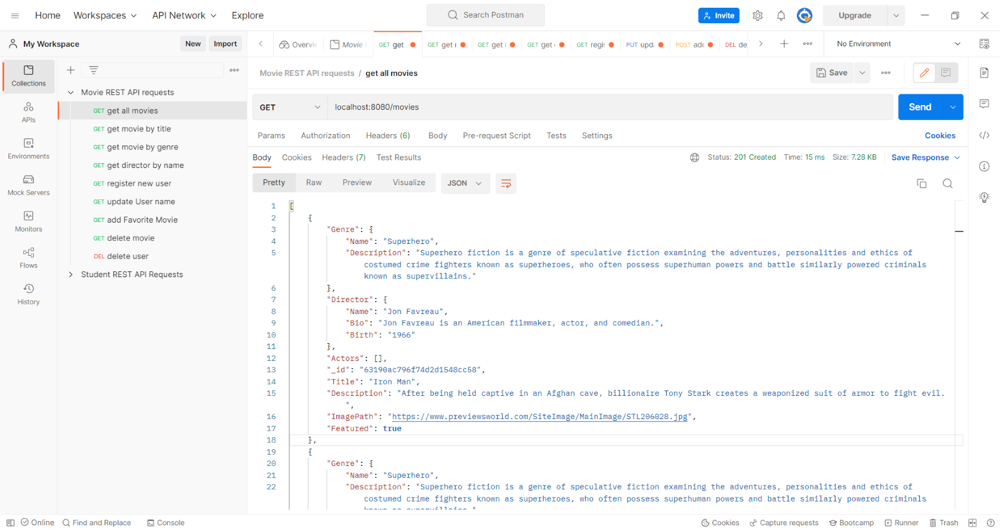

myFlix Case Study
Overview
myFlix is a web application, developed using the MERN stack. (MongoDB, Express, React, and Node.js) The app provides users with the ability to create an account, giving them access to a list of movies, their directors, and genres. Users are able to update their personal data and add or remove movies on a list of their favorites.
Purpose and Context
myFlix was a required project built during my web development course at CareerFoundry that demonstrates my Full-Stack skills.
Objective
The aim of the project was to gain a deeper understanding of both frontend and backend development with JavaScript-based technologies, as well as bringing the frontend and backend together to create a Full-Stack web application to add to my portfolio.
Approach and Process
 

Server-Side Implementation
For the server-side, I created a RESTful API using Node.js and Express that accesses a noSQL database (MongoDB) via common HTTP methods. The database uses CRUD operations for manipulation and provides data for movies in JSON format. View Documentation To test the API, I used Postman. I also included user authentication and authorization code in the form of basic HTTP authentication and JWT authentication.
Client-Side Implementation
After completing the API, I began building the interface users would need when making requests to and receiving responses from, the server-side. It is a single-page, responsive application, developed with React and React-Redux.
- Registration view: Allows new users to register (username, password, email, birthday).
- Login view: Allows users to log in with a username and password.
- Main view: Returns a list of ALL movies to the user (each listed item with an image, title, and description), allows for sorting and filtering, includes the ability to select a movie for more details.
- Movie view: Returns the data (description, genre, director, image) about a single movie to the user and allows users to add or remove a movie on their list of favorites.
- Genre view: Returns data about a genre, with a name and description.
- Director view: Returns data about a director. (name, bio, birth year, death year)
Challenges and Learnings
Given that this was my first project built using React, it took me a bit of time to get accustomed to React's structure and in particular the use of state across components. With the help of my tutor and after multiple pair-programming sessions with an experienced developer, I was able to really learn React and complete myFlix.
While working on the server-side I quickly became familiar with using the terminal. I enjoyed building the API and learning database structures. I think one of the more important things I learned through my challenges with React, aside from the technology, was that you can't give up on a project when things get difficult.
Duration
I started building myFlix September 2022 and finished November 2022. The majority of that time was spent on the client-side, really learning the way React and React Redux work.
Credits
My Role: Lead Developer
Tutor: Christopher A
Mentor: Neal P